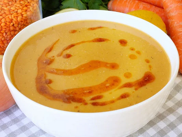

Lentil Soup

Lentil soup is commenly consumed in Europe,Latin America and Middle Eastern.
Ingredients
- 2 tablespoons oil
- A dry onion
- A tablespoon of flour
- Half a tablespoon of tomato paste
- A Carrot
- A cup of red lentils
- A litre of Water
- Black pepper
- Salt
- Cumin
- 2 tablespoon of butter
- A teaspoon of red powdered pepper
Recipe
- First, pour 2 tablespoons of oil into the pot,
-
Then chop a dry onion and add into the pot and bake it until it forms into pinkish color.
-
Add a tablespoon of flour into the pot and continue to mix.
-
Add half a tablespoon of tomato paste.
-
Dice the carrot into cube pieces and then add it into the pot.
-
Add a cup off red lentils into the pot.
-
A a litre of water into the pot.
-
Cook the mixture until carrot pieces and red lentils get soft.
-
The cooked soup is passed through the blender.
-
Add black pepper and salt.
-
The water can be added if there is an desire to change consistency of soup.
-
Add 2 tablespoon of butter and a teaspoon of red powdered pepper.